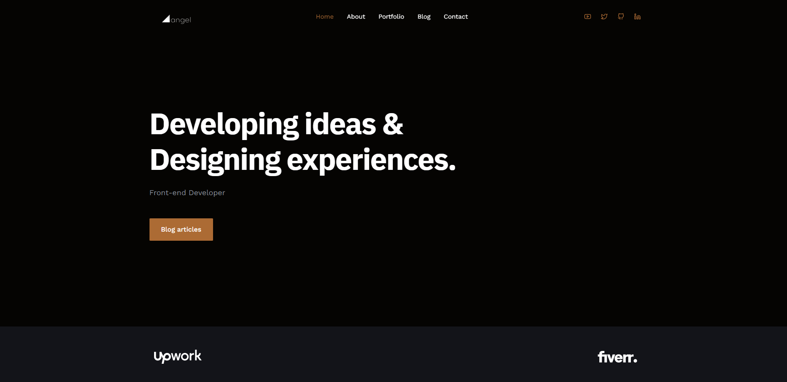

Portfolio v1

Primera version del portafolio
Tener un portafolio personal como desarrollador de software ha sido una experiencia verdaderamente enriquecedora para mí. Me ha brindado la oportunidad de destacar mis habilidades, mostrar mis proyectos y demostrar mi experiencia a posibles empleadores y clientes. Es una herramienta poderosa que me ha permitido presentar mi trabajo de manera efectiva y visualmente atractiva.
Gracias a mi portafolio personal, he podido resaltar mis logros y demostrar mis habilidades de una manera tangible. Los reclutadores y clientes pueden evaluar fácilmente mi trabajo y comprender la calidad de mis proyectos. Esto me ha ayudado a obtener más oportunidades laborales y proyectos freelance, ya que pueden ver de primera mano lo que soy capaz de hacer.
Además, mi portafolio personal me ha permitido construir y fortalecer mi marca personal como desarrollador de software. Puedo establecer una identidad en línea sólida y coherente, enfocándome en mis áreas de especialización y fortalezas únicas. Esto me diferencia de otros profesionales y me posiciona como un candidato valioso en el mercado laboral.
Cuando se trata de aprender a desarrollar en React, ha sido una elección excelente. React es una biblioteca de JavaScript muy popular y respaldada por una gran comunidad de desarrolladores. Aprendiendo React, he descubierto una forma eficiente y modular de construir interfaces de usuario interactivas y dinámicas.
Mis inicios en el aprendizaje de React fueron emocionantes y desafiantes. Necesitaba una sólida base en HTML, CSS y JavaScript, pero una vez que dominé esos conceptos, pude sumergirme en el mundo de React y experimentar con la construcción de mis propias aplicaciones web. He utilizado recursos en línea, tutoriales y documentación oficial para profundizar en mis conocimientos y aplicarlos en proyectos personales.
Rol Técnico
- HTML
- CSS
- JavaScript
- React